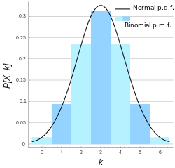
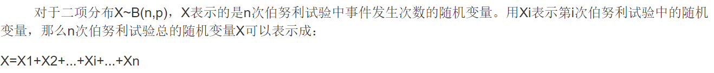
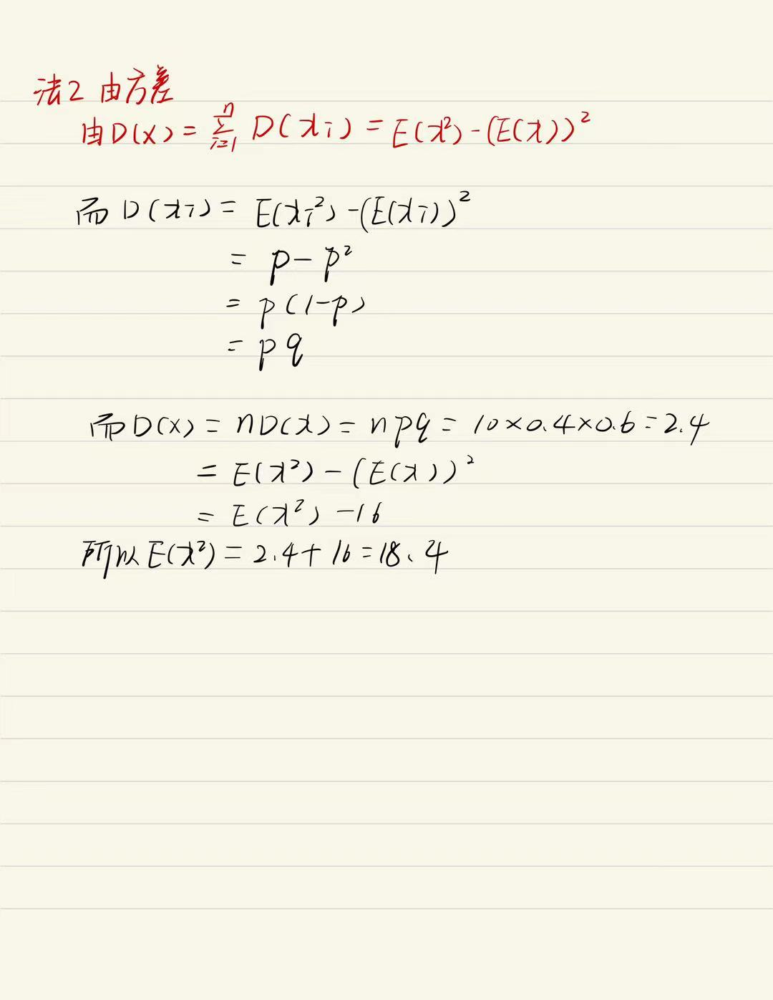

二项分布X∼B(n,p)
令一组伯努利试验的成功概率为p，失败概率为q=1−p，则n次伯努利试验中会有多少次成功？
定义随机变量X为n次试验中成功的次数,则X的取值范围为{0,1,2…n}。对于k=0,1,2…,n,因为存在Cnk中方法来选出n次试验中哪k次成功,而每个发生的概率是pkqn−k,所以有Pr{X=k}=Cnkpkqn−k满足如上概率分布称为二项分布。名称“二项”的来源是因为上式的等号右侧是(p+q)n的二项展开式中的第k项。

当k增加时,概率P{X=k}先是随之增加,直至达到最大值,随后单调减少.我们指出,一般,对于固定的n及p,二项分布b(n,p)都具有这一性质. 概率密度？（存疑）
f(x)=x!(n−x)!n!px(1−p)n−x 分布律
P(X=i)=cnipi(1−p)n−i 数学期望E[X]=np

Xi={10i th实验发生 其他 那么 X=X1+X2⋯XnE(Xi)=1⋅p+0⋅q=p∴E(X)=E(X1+X2⋯Xn)=E(X1)+E(X2)+⋯E(Xn)=n个p+p⋯p=np 方差D[X]=npq
痴呆证明
D(Xi)=E{[Xi−E(Xi)]2}=E[(Xi−p)2]=p(1−p)2+q(−p)2=pq2+qp2=pq(p+q)=pq 聪明版
D(Xi)=E(Xi2)−(E(Xi))2=p−p2=p(1−p)=pq D(x)=i=1∑nD(xi)=E(λ2)−(E(λ))2 D(X)=nD(Xi)=npq EX
设X表示10次独立重复射击命中目标的次数，每次射击命中率为0.4，则E(X2)=
X∼B(10,0.4)E(X2)=D(X)+(E(X))2=npq+(np)2=10×0.4×0.6+(10×0.4)2=2.4+16=18.4 具体解法
